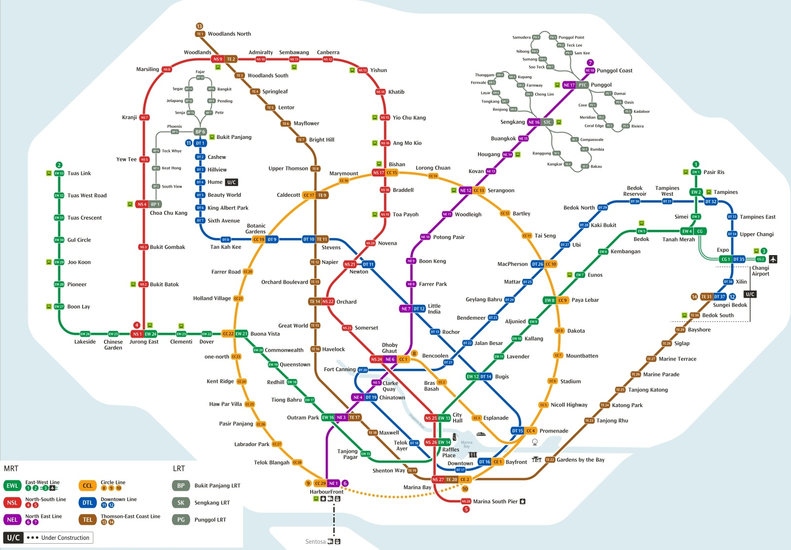

const container = document.getElementById('image-container'); const img = document.getElementById('zoom-image'); let scale = 1; let originX = 0; let originY = 0; let isDragging = false; let startX, startY; // Zoom with mouse wheel container.addEventListener('wheel', function(e) { e.preventDefault(); const zoomFactor = 0.1; const rect = img.getBoundingClientRect(); const offsetX = e.clientX - rect.left; const offsetY = e.clientY - rect.top; const prevScale = scale; if (e.deltaY < 0) { scale += zoomFactor; } else { scale = Math.max(zoomFactor, scale - zoomFactor); } // Adjust origin to zoom towards mouse pointer originX = offsetX - (offsetX - originX) * (scale / prevScale); originY = offsetY - (offsetY - originY) * (scale / prevScale); updateTransform(); }); // Drag to pan container.addEventListener('mousedown', function(e) { isDragging = true; startX = e.clientX; startY = e.clientY; container.style.cursor = 'grabbing'; }); container.addEventListener('mouseup', function() { isDragging = false; container.style.cursor = 'grab'; }); container.addEventListener('mouseleave', function() { isDragging = false; container.style.cursor = 'grab'; }); container.addEventListener('mousemove', function(e) { if (!isDragging) return; const dx = e.clientX - startX; const dy = e.clientY - startY; startX = e.clientX; startY = e.clientY; originX += dx; originY += dy; updateTransform(); }); function updateTransform() { img.style.transform = `translate(${originX}px, ${originY}px) scale(${scale})`; }